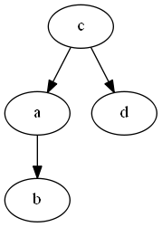
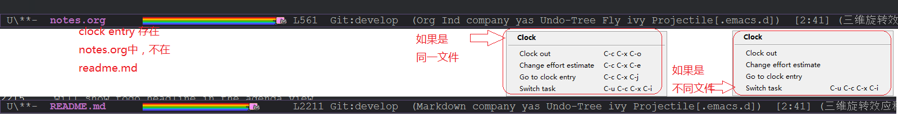

Created: 2018-05-04 周五 17:01
Yet Another Link** Branch Two Branch C
ls -ls .

((a+b)^3 +sqrt(c))/(2x+1)
((a+b)^3+sqrt(c))/(2x+1
| 属性 | 说明 |
|---|---|
| 1. dir | specify directory the code should run … Tramp? |
| 2. session | re-use interpreter between code blocks |
| 3. file | write results to the file system |
| 4. eval | limit evaluation of specific code blocks |
| 5. cache | cache eval results to avoid re-evaluation of blocks |
| 6. var | setting variables for a block (ignore with no-expand) |
| padline | |
| post | post processing of code block results |
| wrap | |
| Misc | hlines, colnames, rownames |
(require 'cl) (flet ((take (remaining lst) (if (> remaining 0) (cons (car lst) (take (1- remaining) (cdr lst))) '("...")))) (take only data))
return [x * x for x in range(1,20)]
| Category | Amount |
|---|---|
| RDS1 | 34 |
| RDS | 120 |
| car | 63.4 |
| taf | 34.0 |
| sdf | 34.4 |
| TOTAL: | 251.80 |
| Date | Category | Amount |
|---|---|---|
| $0 | ||
| Total: | 0.00 |
<br/> <br/>
hello world
